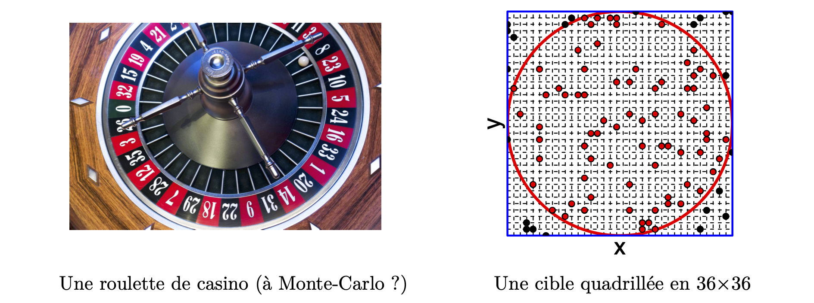

Dans les applications réelles il y a en général plusieurs paramètres. On a donc un vecteur de paramètres \(\boldsymbol{\theta} = (\theta_1,\dots, \theta_d)\). La formule de Bayes donnant la distribution a posteriori à partir de la loi a priori et de la vraisemblance est toujours valable dans ce cas : elle donne la loi a posteriori conjointe des \(d\) paramètres. Toute l’information est contenue dans cette loi conjointe. Mais son calcul numérique n’est pas toujours facile, notamment dans des modèles complexes, et dans certains modèles même la vraisemblance est difficile à calculer. De plus, pour obtenir la distribution a posteriori conjointe, il faut aussi calculer la constante d’intégration \(f(\boldsymbol{y}) = \textstyle \int_{\Theta^d} f(\boldsymbol{y}|\boldsymbol{\theta})\pi(\boldsymbol{\theta})\,\text{d}\boldsymbol{\theta}\). Une solution analytique n’est disponible que dans des cas très particuliers (notamment lors de l’utilisation de lois conjuguées); et dans la majorité des cas pratiques, l’intégrale doit en fait être calculée numériquement. Si \(\theta\) est de dimension \(d\), il s’agit de calculer une intégrale de multiplicité \(d\), ce qui devient difficile lorsque \(d\) est grand (les problèmes numériques apparaissent dès que \(d> 4\)).
Un problème encore plus difficile surgit lorsque l’on veut tirer des conclusions à partir de cette distribution a posteriori conjointe. En général nous sommes intéressés par les valeurs possibles pour chaque paramètre. C’est à dire que l’on a besoin des distributions marginales, unidimensionnelles, de chaque paramètre. Pour les obtenir il faut là aussi intégrer la distribution conjointe (et ce \(d\) fois s’il y a \(d\) paramètres). Le problème est d’autant plus difficile qu’il faut calculer ces intégrales pour chaque valeur possible du paramètre pour reconstituer toute la densité a posteriori numériquement. Dans les problèmes complexes un calcul suffisamment précis de ces intégrales parait impossible et l’on a recours en général à des algorithmes basés sur des simulations d’échantillonnage, en particulier les algorithmes de Monte-Carlo par chaînes de Markov (dits “Markov chain Monte Carlo” — MCMC).
Identifier la loi a posteriori apparaît simple en théorie grâce au théorème de Bayes. Mais en pratique le calcul de l’intégrale au dénominateur s’avère souvent extrêmement difficile. Trouver une expression analytique n’est possible que dans quelques cas bien particuliers, et l’évaluation numérique peut se révéler tout aussi difficile, notamment lorsque la dimension de l’espace des paramètres augmente.
La statistique bayésienne computationnelle cherche des solutions pour pouvoir estimer la distribution a posteriori, y compris lorsqu’on ne connaît que le numérateur dans le théorème de Bayes (loi a posteriori non-normée). Les principales méthodes utilisées s’appuient sur des algorithmes d’échantillonnage permettant de générer un échantillon distribué selon la loi {a posteriori}. On peut distinguer deux grands types parmi ces algorithmes : i) d’abord les méthodes d’échantillonnage directes, où l’on génère un échantillon à partir d’une loi simple (par exemple uniforme), que l’on transforme afin que le résultat soit distribué selon la loi a posteriori ; ii) les méthodes de Monte-Carlo par chaînes de Markov (MCMC), où l’on construit une chaîne de Markov sur l’espace des paramètres dont la loi invariante correspond à la loi a posteriori.
Monte-Carlo (1955) est le nom crypté d’un projet de John von Neumann et Stanislas Ulam au Los Alamos Scientific Laboratory visant à utiliser des nombres aléatoires pour estimer des quantités difficiles (ou impossible) à calculer analytiquement.
En s’appuyant sur la loi des grands nombres, il s’agit d’obtenir un échantillon dit “de Monte-Carlo” permettant de calculer divers fonctionnelles à partir de la distribution de probabilité suivie par l’échantillon. En effet \(\mathbb{E}[f(X)] = \int_x f(x)p_X(x)dx\). Or grâce à la loi des grands nombres, on a : \(\mathbb{E}[f(X)] = \frac{1}{N}\sum_i f(x_i)\) à condition que les \(x\) forment un échantillon \(iid\) selon la loi de \(X\). On peut ainsi estimer un certain nombre d’intégrales, à condition d’être capable d’échantillonner selon \(p(x)\).
Estimation du nombre \(\pi=3,14\dots\) à l’aide de nombres aléatoires.

Si \(n=1000\) et que l’on trouve \(786\) points sont dans le cercle, alors on a \(\textstyle\widehat{\pi} = 4\times \frac{786}{1000}=3,144\). On pourrait améliorer notre estimation en augmentant la résolution de notre grille, et aussi en augmentant notre nombre de points \(n\). En effet, on a \(\lim_{n\to+\infty}\widehat{p}_C = p_C\) d’après la loi des grands nombres.
Ainsi on a construit un échantillon de Monte-Carlo à partir de cet échantillon on peut calculer de nombreuses fonctionnelles, notamment \(\pi\) qui correspond à 4 fois la probabilité d’être dans le cercle.
De manière analogue, les méthodes d’échantillonnage directes ou par MCMC cherchent à construire un échantillon de Monte-Carlo de la distribution a posteriori, afin de calculer un certain nombre de fonctionnelles (Moyennes a posteriori, intervalles de crédibilité, etc.)…